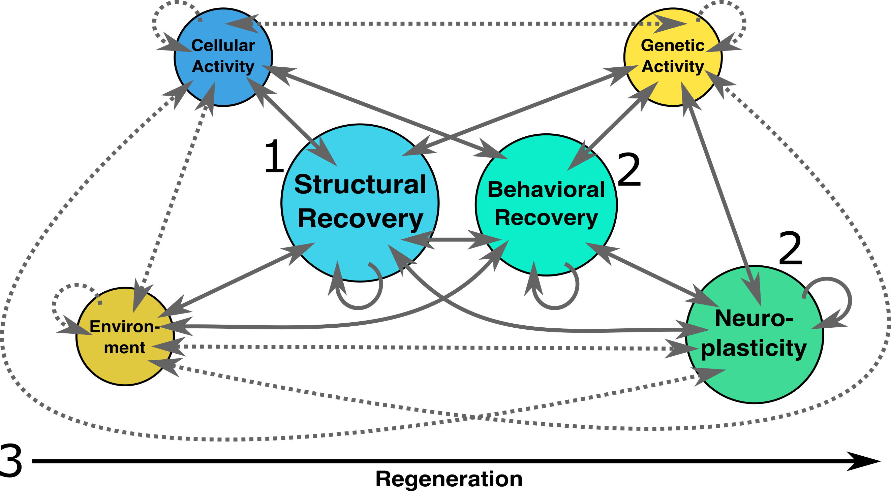

Our Research Framework
Regeneration is an Emergent Property
We are building evidence that tissue regeneration is not a single genetic switch, but an emergent property of the coaction between genetic, cellular, environmental, and behavioral signals.
The diagram represents these coactions. Solid lines represent coactions we are directly interested in, while dotted lines represent secondary interests. By placing structural and behavioral recovery at the center, we aim to unravel the biology underlying the variability of healing.

The Behavioral Biology of Super-Healers
Investigating Nature's Models
Before we can mimic regeneration, we must understand the diverse physiological toolkits of the animals that master it. We are expanding our research beyond standard injury models to investigate the ethology and unique biology of the African Spiny Mouse (Acomys) and Salamanders.
🧠 Memory of Spiny Mice
We are characterizing the long-term memory of Spiny mice to understand the cognitive baseline for studies invesigating memory after injury. This work is supported by an internal PrePI grant from Kennesaw State University, with Dr. Vishnu Suppiramaniam and Dr. Erica Holliday.
Olfactory and Tactile Sensation in Salamanders
How do regenerative animals perceive their world? We are launching new studies into sensory and olfactory communication in Salamanders to understand the sensory baseline before injury. This work is supported by an internal Mentor Protege grant from Kennesaw State University, with Dr. Todd Pierson.
Key Publications
- Varholick (2025). "Bite wounds and dominance structures in male and female African spiny mice..." Animals. Link
Behavior as a Driver of Repair
Identifying the Role of Sensation & Plasticity
Regeneration doesn't happen in a petri dish; it happens in a behaving animal. We hypothesize that behavior and neuroplasticity are not just outcomes of recovery, but active drivers of it.
🧠 Neuroplasticity & Sensation
Do highly regenerative animals use novel behaviors to optimize their recovery? We investigate how the brain "remaps" after injury and how restored sensation (like that in our whisker pad model) feeds back into the brain to close the loop of functional recovery.
🕔 Sensitive Periods in Regeneration
Development has sensitive periods—critical windows where the system is plastic. We believe regeneration re-opens these windows. By identifying when the system is most sensitive to behavioral inputs, we can determine the optimal time to intervene.
Biobehavioral Therapies for Human Recovery
Applying Lessons to the Clinic
Our ultimate goal is translation. We apply the lessons learned from Spiny mice to challenge the limitations of human biology.
Optimizing Peripheral Nerve Healing
Humans can regenerate single axons, but we fail to regenerate the complex neural architecture required for full sensation. Using the Spiny mouse whisker pad as a template, we are working to identify the signals required to guide peripheral nerves and regenerate the connective tissues that support them in humans.
Key Publications
- Varholick et al. (2025). "Spiny mice regenerate wounded whisker pad skin with whisker follicles..." npj Regenerative Medicine. PDF